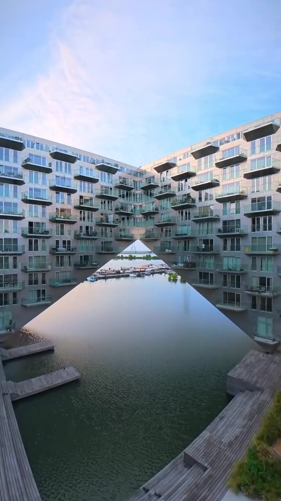
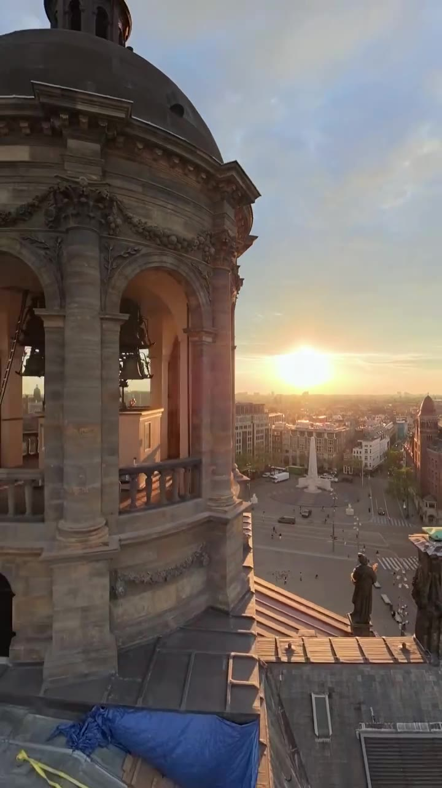

Dronefotograaf & dronevideograaf uit Zaandam
Nederland, vanuit een ander perspectief.
Haarscherpe dronefoto's en cinematische dronevideo's voor vastgoed, architectuur, bedrijven en evenementen. Vanuit Zaandam, door heel Nederland.
01 — Perspectief
Ik vlieg waar een gewone camera niet komt. Langs glazen torens, boven historische daken en over de Zaan, altijd op zoek naar het gouden uur en het beeld dat jouw verhaal vertelt.
6K
D-Log video tot 60 fps
360°
Panorama’s binnen & buiten
60 km
Rond Amsterdam zonder reiskosten
2×
Revisierondes inbegrepen bij film
02 — Geselecteerd werk
Recente vluchten


03 — Diensten
Wat ik voor je vastleg
Van één luchtfoto voor Funda tot een complete cinematische film. Je krijgt alles in één hand: planning, vergunning, vliegen en nabewerking.
- 01 Vastgoed & makelaardij Laat een woning of object opvallen op Funda met luchtfoto’s die de ligging, tuin en omgeving direct laten zien.
- 02 Architectuur & projectontwikkeling Gebouwen vastleggen van alle kanten: hoogbouw, gevels, daken en de relatie met de omgeving, op het gouden uur.
- 03 Bedrijfsfilms & social media Dynamische dronevideo’s voor je website, Instagram, TikTok of LinkedIn. Verticaal of liggend, van kort tot lang.
- 04 Evenementen Festivals, sportevenementen, bruiloften en bedrijfsfeesten. De sfeer en schaal van je evenement, vanuit de lucht.
- 05 Bouw & inspectie Voortgangsrapportages, dakinspecties en overzichtsbeelden van bouwplaatsen. Veilig, snel en zonder steigers.
04 — Werkwijze
Van aanvraag tot oplevering
01
Aanvraag & advies
Je vertelt wat je wilt laten zien. Ik denk mee over shots, timing en formaat en stuur een heldere offerte op basis van de vaste tarieven.
02
Planning & vergunning
Ik check de locatie op luchtruim, no-fly-zones en weersverwachting en regel waar nodig de toestemming. We plannen op het mooiste licht.
03
Vliegen
Op locatie werk ik snel en veilig. Ik leg foto’s en video vast in 4K of 6K D-Log, ook 360° panorama’s zijn mogelijk.
04
Bewerking & levering
Ik selecteer, bewerk en monteer de beelden en lever ze aan in het formaat dat jij nodig hebt. Revisierondes zijn inbegrepen.

Arthur BungenerDronepiloot · Zaandam
05 — Over
Hoi, ik ben Arthur.
Als gecertificeerd dronepiloot leg ik plekken vast zoals je ze nog nooit zag. Van glimmende torens op de Zuidas tot het Paleis op de Dam bij zonsopkomst: ik zoek altijd naar het gouden uur, de perfecte lijn en het verhaal achter een locatie.
Je krijgt bij mij alles in één hand: planning, vergunningen, vliegen en de complete nabewerking. Snel, veilig en met beelden waar je trots op bent.
- Vluchten volgens EASA- en ILT-regelgeving
- Vergunningen en luchtruimcheck geregeld
- Foto, video, 360° en montage in één hand
- Persoonlijk contact, geen tussenpersonen
Werkgebied
Zaandam · Amsterdam · Wormerveer · Krommenie · Assendelft · Purmerend · Haarlem · Alkmaar · Hoofddorp · Amstelveen · en daarbuiten in heel Nederland


07 — Veelgestelde vragen
Goed om te weten
Staat je vraag er niet tussen? Stuur een bericht of bel +31 6 27 401 477.
Wat kost een dronefotograaf?
Een opdracht start bij € 150 ex. btw, inclusief 30 tot 60 minuten vliegen en reiskosten binnen 60 km rond Amsterdam. Bewerking van foto’s start bij € 40 en een gemonteerde film bij € 75. Bekijk de tarievenpagina voor het volledige overzicht.
Heb je een vergunning nodig om met een drone te vliegen?
Dat hangt af van de locatie. Rond Schiphol, in grote delen van Amsterdam en bij natuurgebieden gelden extra regels. Ik controleer elke locatie vooraf en regel waar nodig de toestemming, na goedkeuring door de ILT.
In welke regio werk je?
Ik ben gevestigd in Zaandam en werk vooral in de Zaanstreek, Amsterdam, Haarlem, Purmerend en de rest van Noord-Holland. Binnen 60 km rond Amsterdam reken ik geen reiskosten. Daarbuiten kom ik ook graag, door heel Nederland.
In welke kwaliteit lever je de beelden aan?
Foto’s lever ik in hoge resolutie, video in HD 1080p of 4K/60 fps. Afhankelijk van de drone kan ik ook in D-Log 6K/60 fps filmen voor maximale ruimte in de kleurcorrectie. Ook 360° panorama’s zijn mogelijk.
Wat gebeurt er bij slecht weer?
Bij harde wind, regen of slecht zicht vliegen we niet. We plannen dan in overleg een nieuwe datum in, zodat je altijd beelden krijgt waar je blij mee bent.
Hoe snel heb ik de beelden?
Foto’s heb je doorgaans binnen enkele werkdagen. Voor een gemonteerde film geldt meestal een iets langere doorlooptijd, afhankelijk van lengte en revisies. Haast? Laat het weten in je aanvraag.